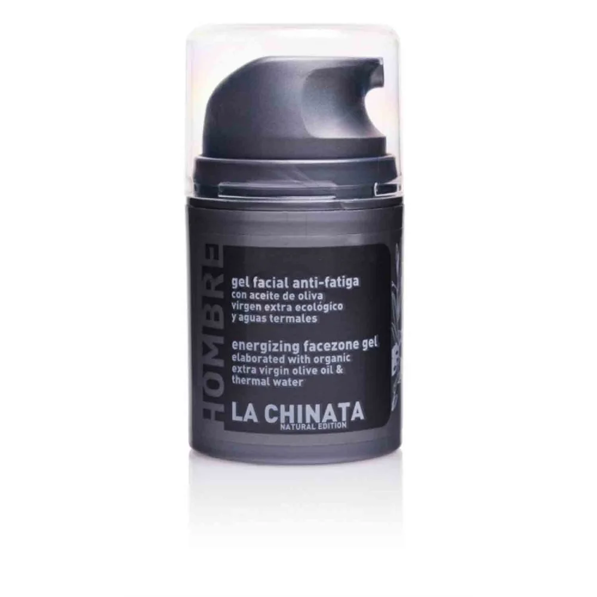

Cosmetic Made in Spain
聯繫我們
產品展示
LA CHINATA ANTI-FATIGUE FACIAL GEL FOR MEN

95 Kr 50ml
La Chinata Natural Edition Anti-Fatigue Facial Gel is part of our men's cosmetic line. It is formulated with Extra Virgin Olive Oil, thermal waters and olive extract, which hydrate, soften and revitalize the skin at any time of the day. Its effect is immediate and brings freshness and softness to the skin, with or without a beard. Its composition has organic silicon, which has a multitude of properties to prevent and repair the signs of aging, as it activates the action of collagen. It also acts as a firming and improves the elasticity of the skin. It also has a complex of proteins and salts that hydrate and promote cell regeneration. In the same way, the olive extract, with antioxidant properties, adds an anti-inflammatory and anti-irritant action.
Vida Copyright © 2024 All rights reserved